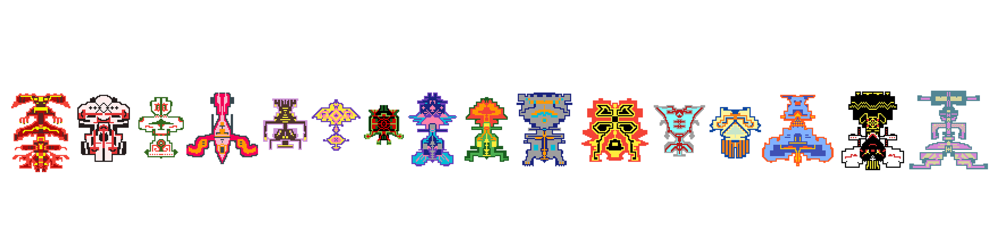

Hello, World!
This is vmsh, МАШ, Vicky or Victoria Masheva.
I am an artechie woman...

KukercheArt
Futuristic designs inspired by the tradition
Available on Pixabay! Free for use & download!
Royalty-free print-on-demand images available here.
Behance | Pixabay | WordPress | Facebook
Welcome to the world of KukercheArt!
The Bulgarian folklore is my passion and I am looking for alternative ways of interpreting and sharing its magic with the rest of the world.
I would like to present to you my digital friends - kukercheta. These little heroes are inspired by the Bulgarian kuker, the cosmos, the Bulgarian shevitsa, and the pixel of the screen. Kukerche means a small kuker. All the designs in this shop have their origin from a particular kukerche.
A "kuker" is a traditional Bulgarian mask and costume worn during ritualistic celebrations, particularly around the New Year and before Lent. These rituals, known as "kukeri" (plural for kuker), are part of an ancient tradition meant to scare away evil spirits and ensure a good harvest, health, and happiness for the coming year.
Key aspects of the kukeri tradition:
* Costumes and Masks: The costumes are elaborate and often made of fur, animal skins, feathers, and horns. The
masks can be quite large and are usually made of wood, covered with brightly colored fabrics, beads, and mirrors.
* Ritual Dances: Participants, often men, dressed as kukeri, perform special dances and rituals. They
typically carry bells and other noise-making instruments to drive away evil spirits.
* Symbolism: The kukeri's appearance and actions symbolize fertility and rebirth. The rituals they perform are
believed to chase away winter and evil spirits, making way for spring and good fortune.
* Regional Variations: While the core elements are consistent, different regions of Bulgaria have variations
in the costumes, masks, and specific rituals.
The tradition of kukeri is a vibrant part of Bulgarian folklore and cultural heritage, celebrated with great enthusiasm in many villages and towns across the country.
МАШ
Free music
YouTube | Bandcamp | Soundcloud | Spotify | StarNow | Last.fm | Facebook
Hear my life's formulae.
vmsh
Art & Tech
LinkedIn | Tripod | Blogger | WordPress | Last.fm
An artechie woman with focused experience in:
** Software Professional Services **
(idea generation, pre-sales, requirements gathering, analysis, design, implementation, quality assurance, support, maintenance)
** Art Professional Services **
(idea generation, graphic design, web design, video and movie production, music production and performance, playing instruments, drawing, interior design, writing, and more)
Шумното
Blog & Podcast
Medium | Blogger | YouTube | WordPress
Welcome to the world of Шумното!
*
Thank you for visiting!
@vmsh.xyz